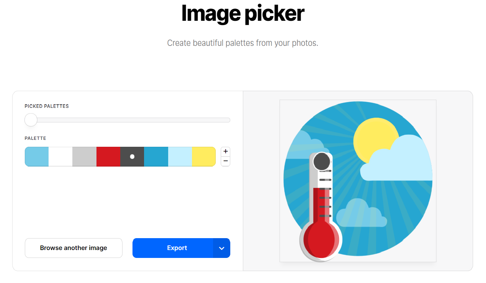
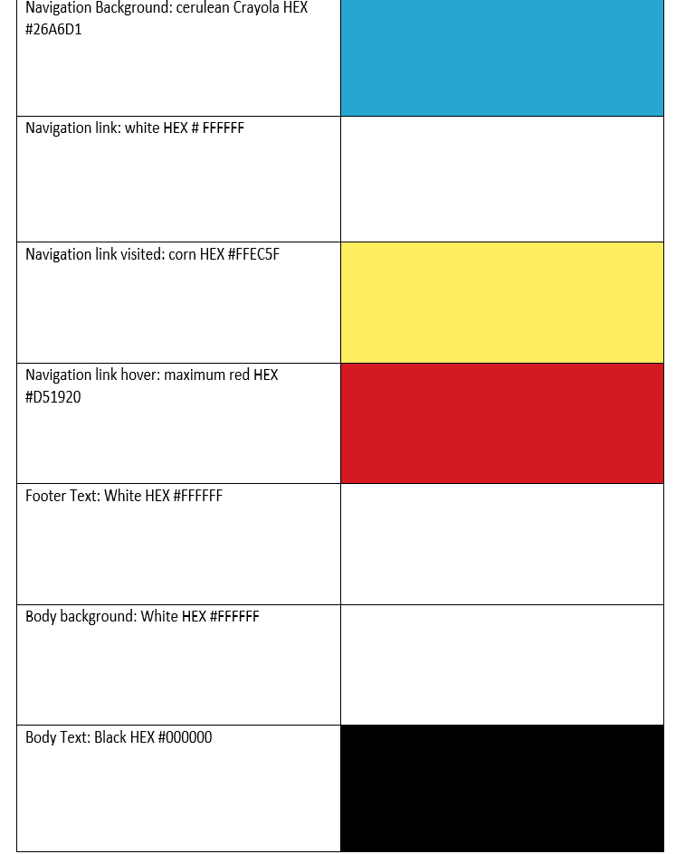
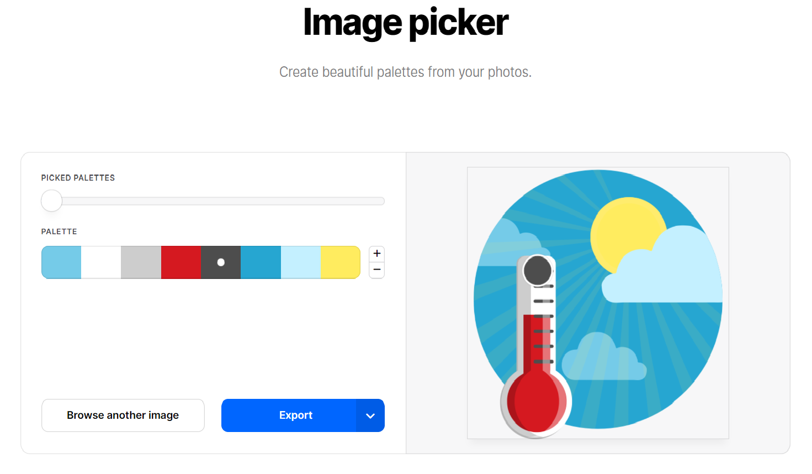
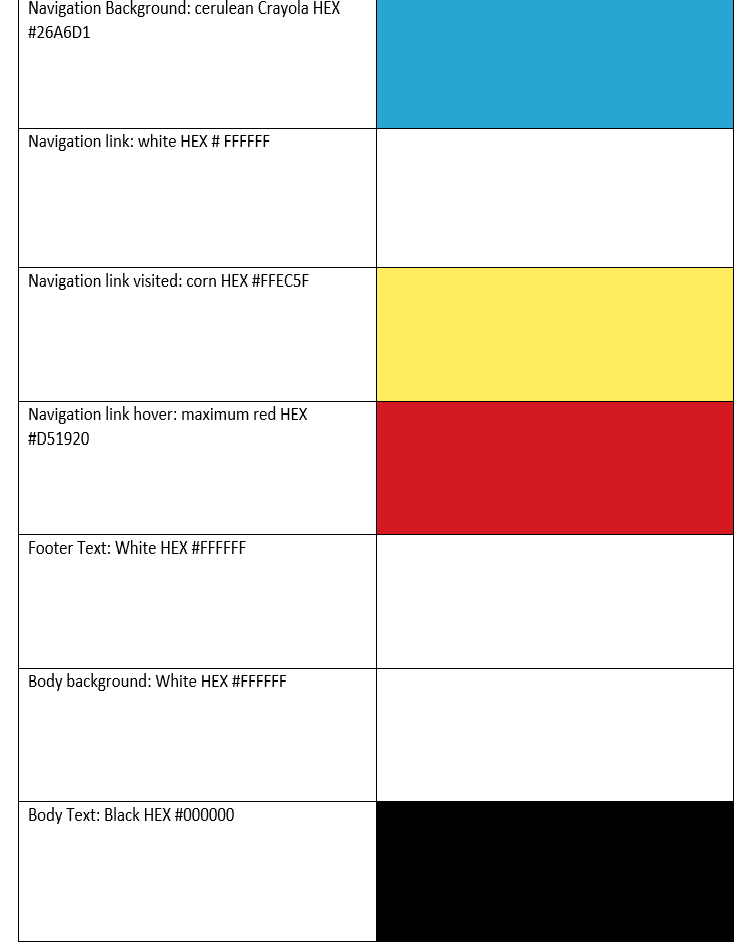

Color Palette
Color PaletteI liked the colors in the logo I chose. They are fun, bright and cheery. I uploaded the logo to Coolors.co and used the image picker to create a color palette.
 I liked the colors in the logo I chose. They are fun, bright and cheery. I uploaded the logo to Coolors.co and used the image picker to create a color palette.
 